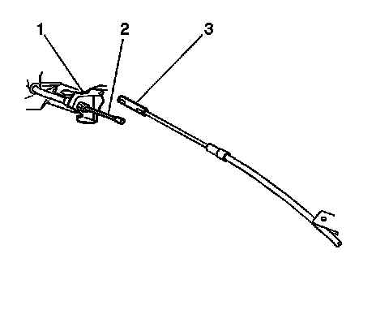
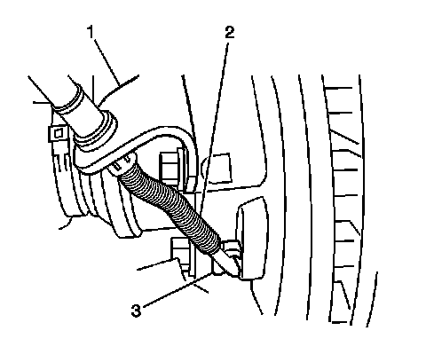

Park Brake Rear Cable Replacement - Right Side
Parking Brake Rear Cable Replacement - Right Side
Tools Required
J 37043 Park Brake Cable Release Tool
Caution: Refer to Brake Dust Caution (Brake Dust Caution) .
Removal Procedure
1. Raise the vehicle and suitably support. Refer to Lifting and Jacking the Vehicle (Service and Repair) .
2. Remove the right rear tire and wheel assembly. Refer to Tire and Wheel Removal and Installation (Service and Repair) .

3. Pull down on the intermediate park brake cable (2) near the park brake cable connector (1).
4. Disconnect the intermediate park brake cable (2) from the park brake connector (1).

5. Disconnect the right rear park brake cable (2) from the intermediate park brake cable connector (3).
6. Use the J 37043 in order to depress the right rear brake cable retainer.
7. Remove the right rear park brake cable (2) from the right rear park brake cable bracket (1).

8. Use the J 37043 in order to depress the right rear brake cable retainer.
9. Remove the right rear park brake cable from the right rear cable bracket (1).
10. Disconnect the right rear park brake cable (2) from the right rear park brake actuator lever (3).
11. Remove the right rear park brake rear cable (2).
Installation Procedure
1. Install the right rear park brake cable (2) to the right rear park brake cable bracket (1).
2. Ensure that the locking tabs are properly seated.
3. Connect the right rear park brake cable (2) to the right rear park brake actuator lever (3).
4. Install the right rear park brake cable (2) to the mounting support bracket (1).
5. Ensure that the locking tabs are properly seated.
6. Connect the intermediate park brake cable connector (3) to the right rear park brake cable (2).
7. Pull down on the intermediate park brake cable (2) near the park brake cable connector (1).
8. Connect the intermediate park brake cable (2) to the park brake connector (1).
9. Install the right rear tire and wheel assembly. Refer to Tire and Wheel Removal and Installation (Service and Repair) .
10. Lower the vehicle.
11. To ensure that the park brake cable retainers are seated, cycle the park brake pedal 1 to 2 times.